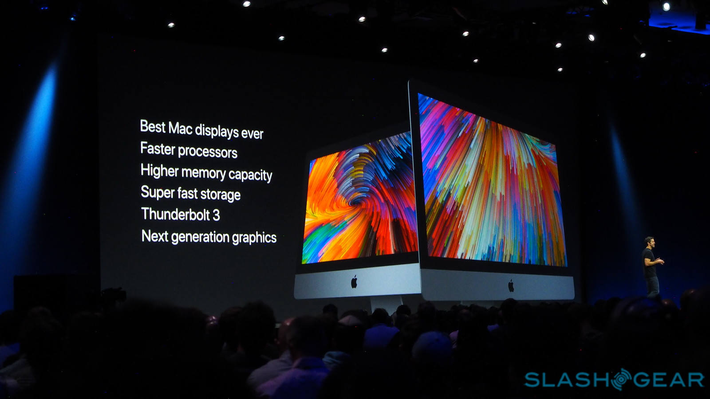

iMac 2017 nâng cấp mạnh về cấu hình, hỗ trợ VR, Kaby Lake, Radeon Pro 580, giá từ 1.099 USD
Bên cạnh việc ra mắt iMac Pro "siêu cấp", Apple còn nâng cấp cấu hình cho toàn bộ dòng iMac cũ và đó là một nâng cấp khá lớn. Cụ thể, chuyển CPU sang thế hệ mới nhất Core i7 Kaby Lake, RAM từ 32 - 64 GB, có hai cổng USB-C (Thunderbolt 3), card đồ họa tối đa Radeon Pro 580 (tương đương GTX 1060) và hỗ trợ VR, sẵn sàng để bạn làm việc và giải trí trong thế giới ảo.
Màn hình của iMac mới có độ sáng 500 nits, sáng hơn đời cũ 43%. iMac 2017 vẫn có hai kích thước màn hình 21,5" và 27". Trong đó bản 21,5" gồm hai độ phân giải 1080p hoặc 4K, bản 27" thì được 5K. iMac 2017 cũng được trang bị 2 cổng USB-C tương tự như iMac Pro có thể xuất cùng lúc 2 màn hình 4K@60fps.
Trong toàn bộ iMac mới, chỉ có bản 21,5" 1080p là dùng VGA tích hợp (Intel Iris Plus 640), các phiên bản còn lại dùng VGA Radeon Pro từ 555 đến cao nhất là 580 8 GB (có sức mạnh tương đương với GTX 1060), hỗ trợ VR đầy đủ. Tại buổi demo, Apple đã cho người ta thấy iMac chạy rất mượt với kính HTC Vive, điều mà các máy tính trước đây cần phải có một cấu hình rất cao để làm được điều đó.
Chủ đề tương tự
- Mời chia sẻ những lỗi trên iOS 11 beta, anh em cân nhắc trước khi lên
- Dùng thử app Files của iOS 11: quản lý file theo cách rất quen thuộc như trên máy tính
- Mời anh em tải về iOS 11 ngay
- App Store có giao diện mới: thêm tab Today, hiển thị nội dung to hơn, tập trung vào từng app/game,..
- MacBook cập nhật cấu hình lên Kaby Lake, MacBook Pro 13 trở lại lựa chọn SSD 128GB giá $1.299